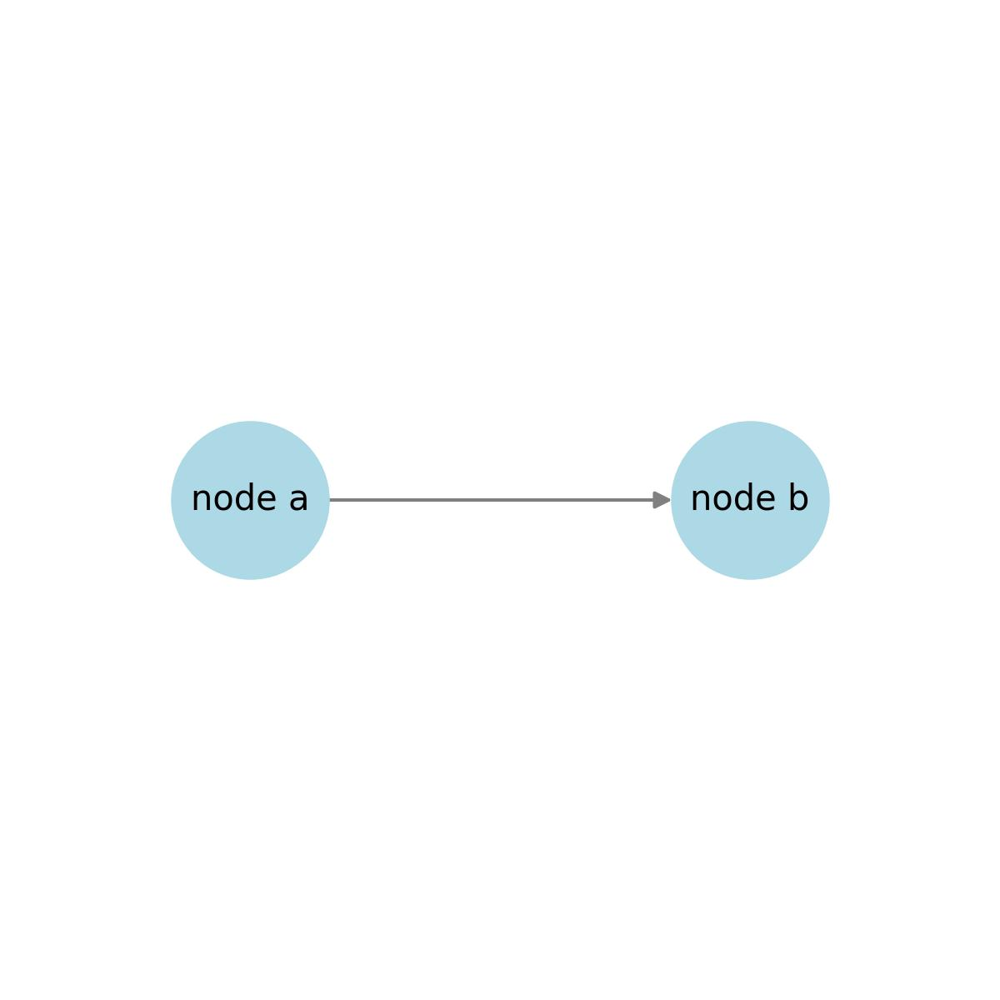

Discrete event Simulation for Manufacturing¶
FactorySimPy¶
FactorySimPy is an open-source, light-weight Python library for modeling and discrete-event simulation (DES) of manufacturing systems. It provides a well-defined set of canonical components commonly found in a manufacturing setting—such as machines with configurable processing delays, joints that packs/joins items from multiple inputs, buffers that operate as FIFO queues, etc. These components come with pre-built behavior that is easily configurable, enabling users to rapidly construct simulation models. To use the library, users define the structure of the system and specify the parameters for each component. The modular design allows users to extend functionality by subclassing existing components, making the library extensible and reusable. Built on top of SimPy 4, FactorySimPy supports both "as fast as possible" and real-time simulation modes. It is currently designed for discrete-item flow systems where the model structure remains fixed during the simulation. Future development plans include extending support to material flows.
Model Description¶
The system is modeled as a graph consisting of two types of components: Nodes and Edges. Nodes represent active components that drive state changes—such as machines that introduce delays by performing operations like packing, unpacking, or modifying items. Edges, in contrast, represent passive components such as conveyor belts, human operators, warehouse robots, or transport vehicles that facilitate the movement of items between nodes.
Each Node maintains two lists: in_edges and out_edges, representing incoming and outgoing connections, respectively. An Edge connects exactly two Nodes and holds direct references to its src_node (source node) and dest_node (destination node). It acts as an out_edge for the source node and an in_edge for the destination node. The graph supports both loops and self-loops, with each Edge uniquely associated with one source and one destination node—even if both refer to the same Node in the case of a self-loop.
Example Representation
State transitions in the simulation are triggered solely by the actions of the Nodes, ensuring a clear separation between control (Nodes) and transport (Edges) within the model.
Example Representation
An example model with 2 nodes and a directed edge

Class Hierarchy¶
├── Node(Base Class for components that processes items)
├── Machine # Processes items
├── Joint # Merges multiple flows into one
├── Split # Splits a flow into multiple branches.
├── Sink # Consumes items
├── Source # generates items
├── Edge(Base Class for components that transfer items from one node to another)
├── Conveyor #transfers items in a sequence from node to another and order is preserved
├── Fleet # Fleet of human operstor, warehouse robots or transport vehicles
├── Buffer # Queue of items waiting to be accepted by the next node in a model
Simple Example¶
A simple example simulating a machine that is obtaining items from a source and processing it and putting it in a sink
import factorysimpy
from factorysimpy.nodes.machine import Machine
from factorysimpy.edges.buffer import Buffer
from factorysimpy.nodes.source import Source
from factorysimpy.nodes.sink import Sink
env = simpy.Environment()
def distribution_generator(loc=4.0, scale=5.0, size=1):
while True:
delay = scipy.stats.expon.rvs(loc=0.0,scale=0.5,size=1)
yield delay[0]
# Initializing nodes
src= Source(env, id="Source-1", inter_arrival_time=2,blocking=False,out_edge_selection="FIRST" )
m1 = Machine(env, id="M1",work_capacity=2,store_capacity=2, processing_delay=distribution_generator())
sink= Sink(env, id="Sink-1" )
# Initializing edges
buffer1 = Buffer(env, id="Buffer-1", store_capacity=4, delay=0.5)
buffer2 = Buffer(env, id="Buffer-2", store_capacity=4, delay=0.5)
# Adding connections
buffer1.connect(src,m1)
buffer2.connect(m1,sink)
env.run(until=10)